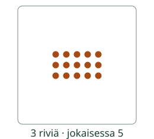

Loikka pakkaa saman verran joka riviin. Rivistö auttaa laskemaan koko määrän.
Riveistä kertolaskuksi
Tavoite: Löydän kertotaulun vastauksen yhtä suurista riveistä.
Kolme riviä, jokaisessa viisi: 3 × 5. Voit laskea 5 + 5 + 5.

Kaksi kuuden riviä on 12. Neljä riviä on kaksi sellaista osaa: 4 × 6 = 12 + 12 = 24.
Mieti: Muuttuuko määrä, jos käännät saman rivistön?
Katso kääntämisen perustelu
Kolmessa viiden pakkauksessa on 15. Myös viidessä kolmen pakkauksessa on 15: 3 × 5 = 5 × 3. Järjestys vaihtuu, määrä säilyy.
Etsi vastaus
Valitse kertolasku. Voit vastata heti tai laskea kuvan avulla.
Keinoja eri tauluihin
1: Yksi seitsemän rivi on 7. 2: Kaksi seitsemän riviä on 7 + 7 = 14.
3: Kolme viiden riviä on 5 + 5 + 5 = 15. 4: Kaksi kuuden riviä kahdesti: 12 + 12 = 24.
5 ja 10: Viisi kuuden riviä on 30. Kaksi sellaista osaa on kymmenen riviä: 30 + 30 = 60. Etsi molemmat rivikuvasta.
Vielä yksi tapa käyttää kertolaskua
Loikka lähtee kohdasta 0. Hän tekee neljä yhtä pitkää kolmen loikkaa: 3, 6, 9, 12. 4 × 3 = 12. Piirrä neljä kaarta nollasta eteenpäin.
Lopuksi: Jos 3 × 4 = 12, miten löydät 4 × 4?
Opettajalle ja kokeilu ilman ruutua
Luokat 1–2. Tee suuri rivistö napeista tai paperipaloista ja käännä koko alusta. Lapsi voi laskea, käyttää tuttua faktaa, piirtää tai selittää halutessaan. Ei pakollisia laskentatäpäytyksiä, nimeämistä, puhetta tai nopeusrajaa. Käytä vain tarvittavaa osaa tauluista kerralla. Tarkistus koskee valittua tuloa, ei kaikkien taulujen muistamista, käytettyä strategiaa tai fyysisen rivistön rakentamista. Kuvan apu on sallittu, eikä se todista itsenäistä muistamista. Käännetty rivistö on yhtä oikea tapa laskea. Ei oppilashistoriaa.